MSD
MSD(Mass Storage Drive)大容量存储驱动器，当您需要使用镜像来恢复/安装操作系统时，PiKVM可以模拟成远程主机的虚拟CD-ROM或闪存动器，使远程主机可以通过bios/uefi引导进入挂载的安装镜像中。
| 查看Web UI中的“驱动器”菜单 |
|---|
| 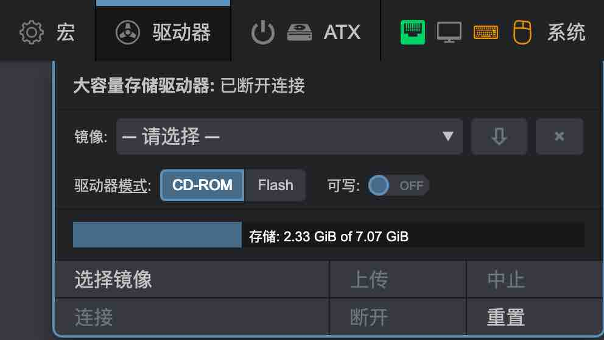 |
提供如下操作:
- 将镜像上传到PiKVM的内部存储。
- 选择要连接到目标主机的镜像。
- 更改介质类型和写入可用性模式。
- 从PiKVM存储下载镜像。
- 驱动器连接管理等。
Warning
切勿在镜像上传过程中或以将镜像以可写模式连接到目标主机时，断开PiKVM电源。 这可能会导致文件损坏
CD-ROM 最大镜像大小为2.2GB
这是由于Linux内核限制， 导致PiKVM无法模拟DVD驱动器。 若要使用更大的启动镜像，请使用Flash驱动器模拟。 如果无法做到这一点(例如有的镜像不支持Flash驱动引导，比如Windows安装iso)， 你可以试试这个方法。
只有在重新连接设备时，才能在CD-ROM和Flash之间更改介质类型
可以使用Web UI中的系统 -> 将主USB连接到服务器开关来完成重新连接设备的操作。
驱动模式是在连接镜像时确定的，而不是通过单击驱动器模式时确定的。
简单来说，通过驱动器模式修改过模式后，需要点击连接使其更改生效，但是远程主机不会实时变化，你需要通过关开将主USB连接到服务器模拟USB拔插的操作来使远程主机端识别到驱动器类型的变化。
上传镜像
-
点击
选择镜像->选择文件，选择镜像。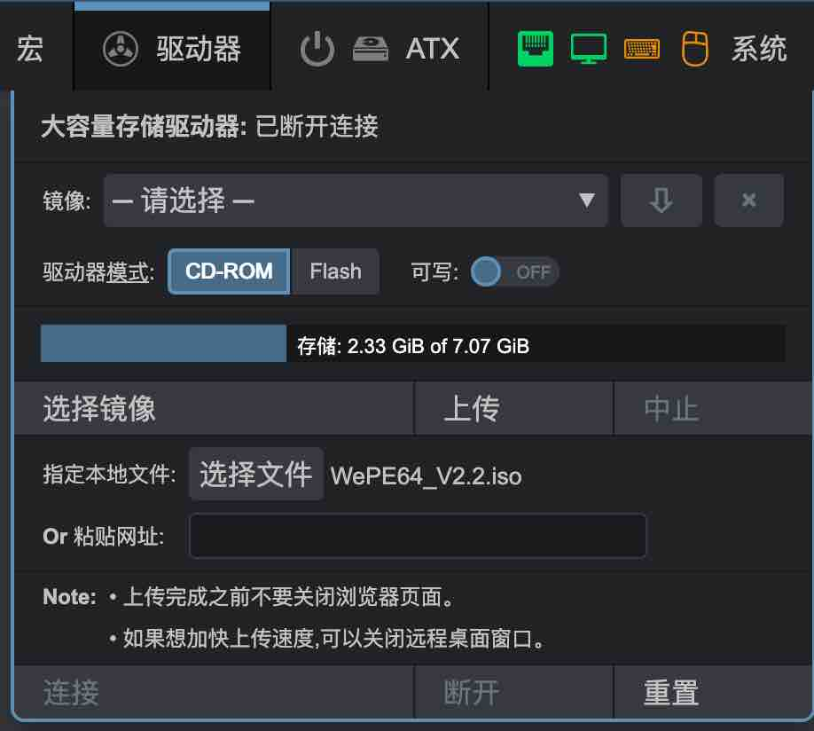
-
点击上传,出现上传进度条，点击中止可以中断上传任务。
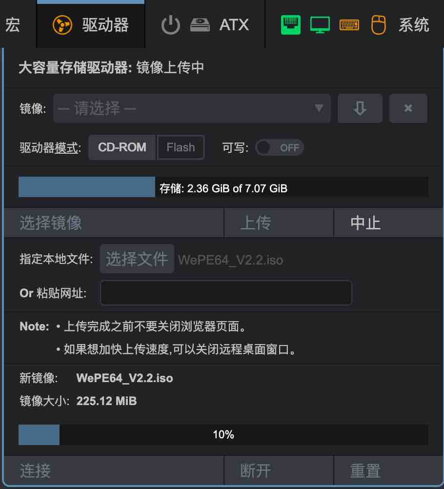
连接镜像
-
镜像下拉框中选择镜像，点击连接，通过ATX打开远程主机电源，进入bios启动项页面，选择PiKVM CD-ROM Driver，回车开始引导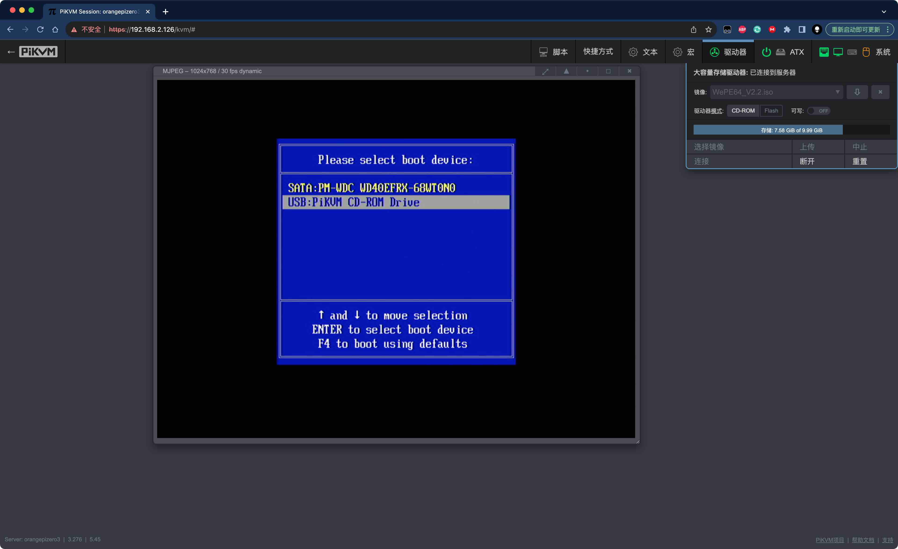
-
远程主机开始引导镜像
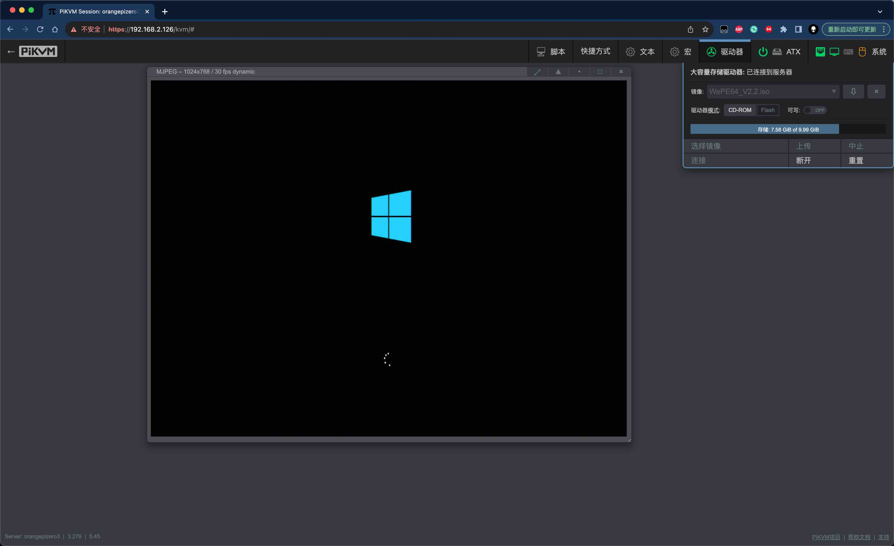
管理镜像
-
点击
断开，大容量存储驱动器状态成为已断开连接状态下，镜像下拉选中需要操作的镜像，点击下拉框右侧的下载、删除按钮对镜像进行相应操作。
虚拟U盘
Info
默认情况下，PiKVM会创建一个虚拟驱动器，用于模拟大容量存储挂载启动镜像引导目标主机，但是，如有必要，您可以创建第二个虚拟驱动器，该驱动器可以用于虚拟U盘，存放一些常用的文件，这样在既拥有引导镜像的同时也能获得一个额外的U盘，这将非常有用。
Note
虚拟U盘是以.img文件的形式存在的，并且你可以在镜像下拉框中发现它。
-
挂载U盘，点击
脚本->挂载虚拟U盘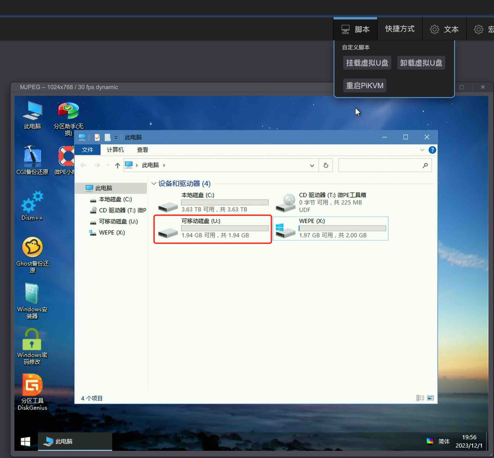
-
卸载U盘，点击
脚本->卸载虚拟U盘
附加的驱动器可能会涉及兼容性的问题。假设同一USB上有多个驱动器，可能在极少数BIOS/UEFI下导致无法识别到对应的驱动器。出于严谨，此功能需要手动激活。
要添加第二个虚拟驱动器，请按照以下步骤操作：
添加额外的驱动器用于虚拟U盘
-
切换至root权限，编辑
/etc/kvmd/override.yaml:otg: devices: drives: enabled: true # Set it to true to enable count: 1 # +1 drive, default value default: # Default configuration for the all extra drives cdrom: false # Default value (false for the generic flash drive) rw: false # Read-only by default或者直接使用指令添加配置文件
cat << EOF > /etc/kvmd/override.d/extraUSB.yaml otg: devices: drives: enabled: true # Set it to true to enable count: 1 # +1 drive, default value default: # Default configuration for the all extra drives cdrom: false # Default value (false for the generic flash drive) rw: false # Read-only by default EOF -
重启PiKVM:
[root@orangepizero3:~#] reboot
使用Ventoy引导镜像
-
创建Ventoy引导镜像，镜像大小根据您所需要的安装镜像大小决定，这里以win10安装镜像为例子创建一个容量为5G的空白Ventoy引导。
su - kvmd-helper-otgmsd-remount rw dd if=/dev/zero of=/var/lib/kvmd/msd/ventoy.img bs=1M count=5000 status=progress -
下载Ventoy工具，对引导镜像进行分区并格式化。
cd ~ wget https://github.com/ventoy/Ventoy/releases/download/v1.0.96/ventoy-1.0.96-linux.tar.gz tar zxvf ventoy-1.0.96-linux.tar.gz kvmd-helper-otgmsd-remount rw losetup -f /var/lib/kvmd/msd/ventoy.img sh ~/ventoy-1.0.96/Ventoy2Disk.sh -i "$(losetup -l | grep ventoy | awk '{print $1}')" y y mkdir -p /mnt/ventoy mount "$(losetup -l | grep ventoy | awk '{print $1}')p1" /mnt/ventoy -
将需要的安装包镜像文件拷贝至Ventoy引导镜像目录中，此时Ventoy的镜像目录挂载至/mnt/ventoy。
Warning
拷贝镜像前，请使用
df -h指令确认/mnt/ventoy目录已经挂载root@orangepizero3:~# df -h Filesystem Size Used Avail Use% Mounted on tmpfs 99M 7.1M 92M 8% /run /dev/mmcblk0p1 4.3G 2.4G 2.0G 55% / tmpfs 491M 148K 491M 1% /dev/shm tmpfs 5.0M 4.0K 5.0M 1% /run/lock tmpfs 491M 0 491M 0% /tmp /dev/mmcblk0p2 10G 6.9G 2.7G 73% /var/lib/kvmd/msd /dev/zram1 47M 548K 43M 2% /var/log tmpfs 99M 0 99M 0% /run/user/0 /dev/loop0p1 4.9G 96K 4.9G 1% /mnt/ventoyscp windows.iso /mnt/ventoy或者windows下使用Winscp工具，将iso上传至/mnt/ventoy
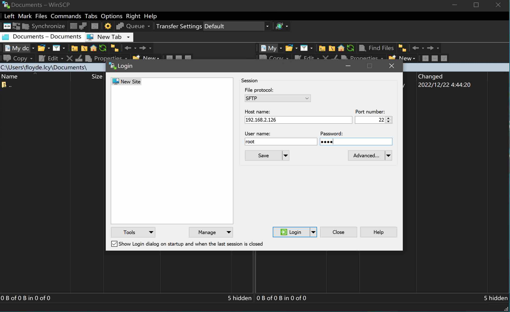
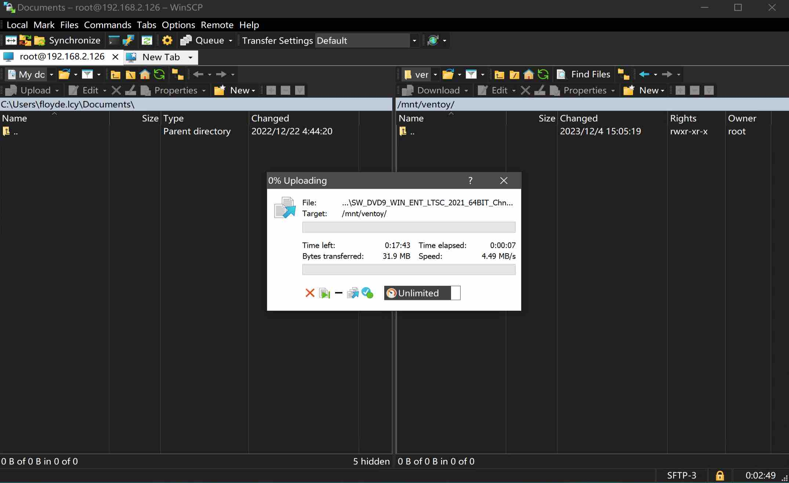
-
待上传完成后取消挂载，并删除losetup设备
umount "$(losetup -l | grep ventoy | awk '{print $1}')p1" losetup -d "$(losetup -l | grep ventoy | awk '{print $1}')" -
在
驱动器使用Flash模式挂载ventoy.img镜像，bios选择从PiKVM启动引导进入ventoy，按L键选择语言，选中镜像后回车选择正常启动，则可以开始windows安装程序，等待3-5分钟，安装程序开始。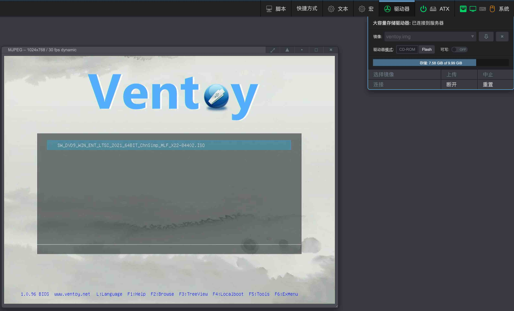 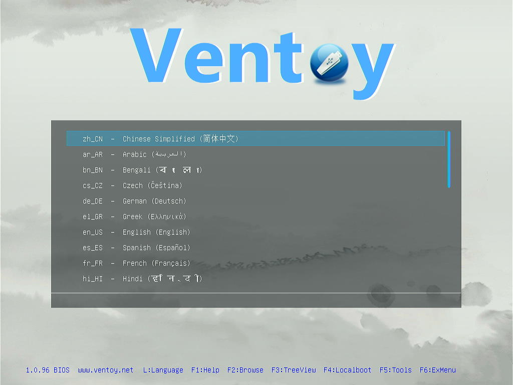 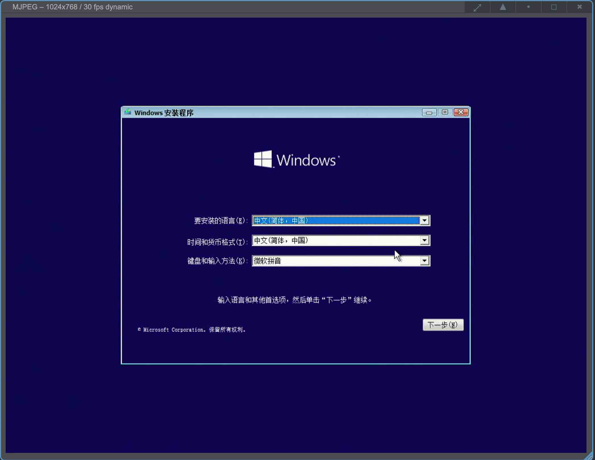
Tips
更换ventoy内的安装镜像，不需要重建ventoy镜像，只需要替换ventoy内的安装镜像，方法如下：
- 将ventoy.img挂载至/mnt/ventoy目录下
su - kvmd-helper-otgmsd-remount rw mount -o loop,offset=1048576 /var/lib/kvmd/msd/ventoy.img /mnt/ventoy df -h - 使用scp或者winscp将需要的安装包镜像文件更新至/mnt/ventoy，提前
df -h确认/mnt/ventoy已挂载df -h scp windows.iso /mnt/ventoy - 镜像传输完成后，取消ventoy.img挂载，完成更新镜像
umount /mnt/ventoy
- 将ventoy.img挂载至/mnt/ventoy目录下